{kind=link}
Structure before synthesis
Editable layouts give language models an explicit way to plan objects and their spatial relationships.
CAAI Transactions on Intelligence TechnologyAccepted 2026
Faculty of Computing, Harbin Institute of Technology
Accepted Manuscript 15.1 MB
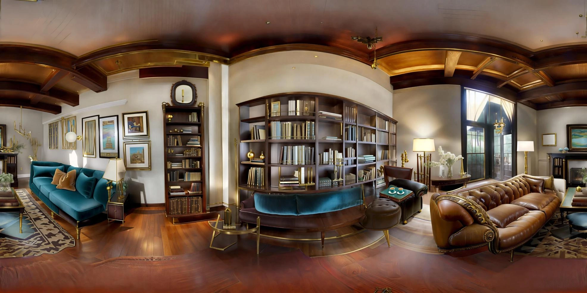
GENERATED PANORAMA 360° THE PROMPT“Generate a retro-style living room”THE IDEA
Generate scenes that make sense.
Keep their structure under your control.
Text-to-3D scene generation has emerged as a promising approach for enabling natural and intuitive 3D content creation through language. However, existing methods often struggle with generating scenes that are semantically faithful, spatially coherent, and controllable, primarily due to the lack of grounded spatial reasoning and fine-grained structural supervision. In this paper, we present ControlScene: Controllable Text-to-3D Scene Generation via Structured Layout Priors, a novel framework that incorporates layout-level structure into the generation process, allowing an LLM to jointly reason about semantics and spatial composition.
To support this framework, we introduce LayoutVerse-20K, a large-scale benchmark dataset comprising 20,000 manually annotated samples, each including textual prompts, layout metadata, graph-structured layouts, scene graphs, and corresponding 3D scenes. For fine-grained evaluation, we propose two task-specific metrics: category and layout plausibility, which assess semantic and spatial alignment by comparing generated outputs against commonsense priors derived from Top-K reference samples. Additionally, we develop an interactive user interface for real-time layout customization, enhancing controllability and practical usability. Extensive experiments show that ControlScene significantly outperforms baseline methods in spatial realism, semantic consistency, and user controllability, providing a robust foundation for future research in grounded, language-driven 3D scene generation.
Editable layouts give language models an explicit way to plan objects and their spatial relationships.
Category and layout plausibility guide refinement of semantic conflicts and spatial inconsistencies.
LayoutVerse-20K connects language, layouts, scene graphs, and 3D scenes for training and evaluation.
01 / THE METHOD
Plan the scene. Refine its structure. Bring it into view.
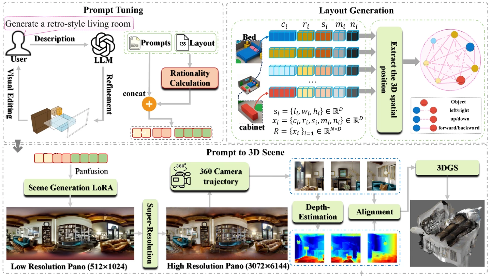
An LLM translates the prompt into scene code and a graph of objects and spatial relationships. Users can edit the layout.
Top-K reference scenes provide priors for category and layout plausibility, guiding iterative refinement.
Panoramic synthesis, super-resolution, multi-view depth estimation, and alignment lead to a 3D Gaussian representation.
02 / SCENE GALLERY
Text prompts, generated panoramas, and views rendered with 3D Gaussian Splatting.
“A welcoming guest room features a queen-sized bed dressed in a blue quilt and fresh linens. Beside the bed, there is a small lamp that provides warm illumination.”
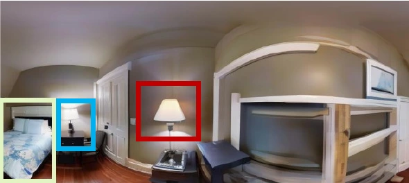
3D GAUSSIAN SPLATTING · MULTIPLE VIEWS
“A warm family room features a sectional sofa and a large TV mounted on the wall. Next to the large TV, there is also an old-fashioned television set.”
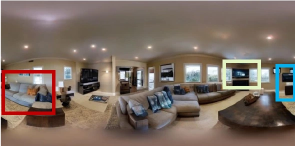
3D GAUSSIAN SPLATTING · MULTIPLE VIEWS
“This nursery room has a warm wooden floor and light-colored walls. There’s also a light blue cushioned bench and a matching armchair with cow-themed stuffed toys.”
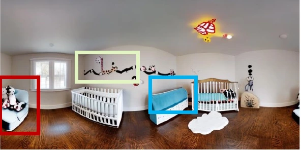
3D GAUSSIAN SPLATTING · MULTIPLE VIEWS
All gallery images are from Figure 6 of the manuscript. View the original figure
03 / SELF-CORRECTION
Resolve conflicts in the structure before they appear in the final scene.
The refinement loop evaluates the initial layout against category and spatial priors, then corrects the underlying scene representation.
Repair overlap and unsupported placement in the bedroom layout.
Remove a desk that conflicts with the bathroom's intended function.
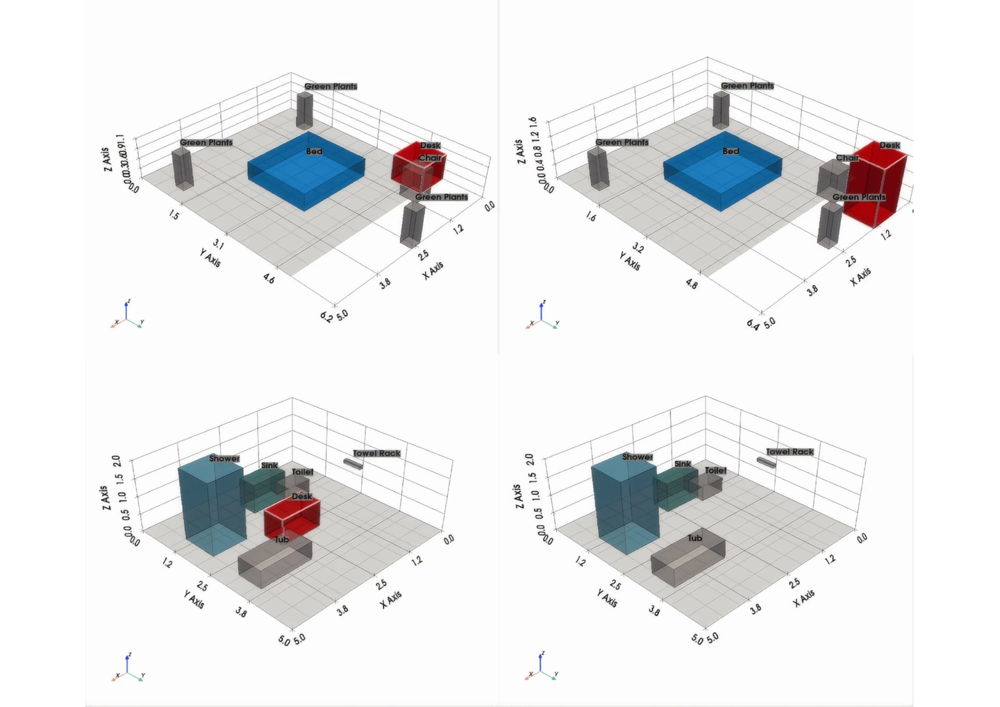
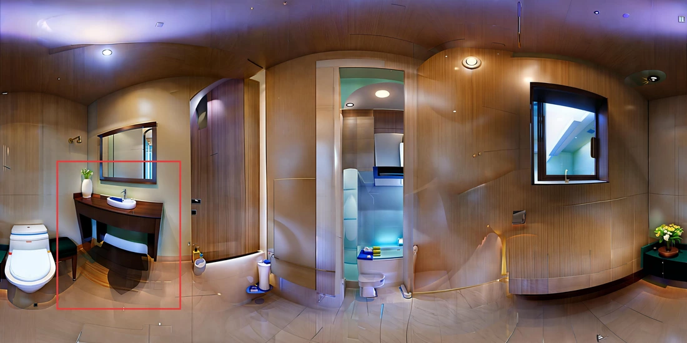
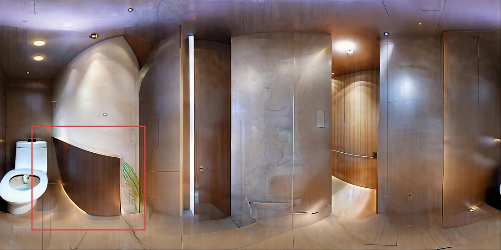
Independent generated panoramas illustrate the same correction case; they are not pixel-aligned views.
04 / THE DATASET
A shared foundation for grounded,
language-driven scene generation.
Each sample links a text prompt to layout metadata, a layout graph, a scene graph, and a corresponding 3D scene. These structured references support training, benchmarking, and the evaluation of semantic and spatial plausibility.
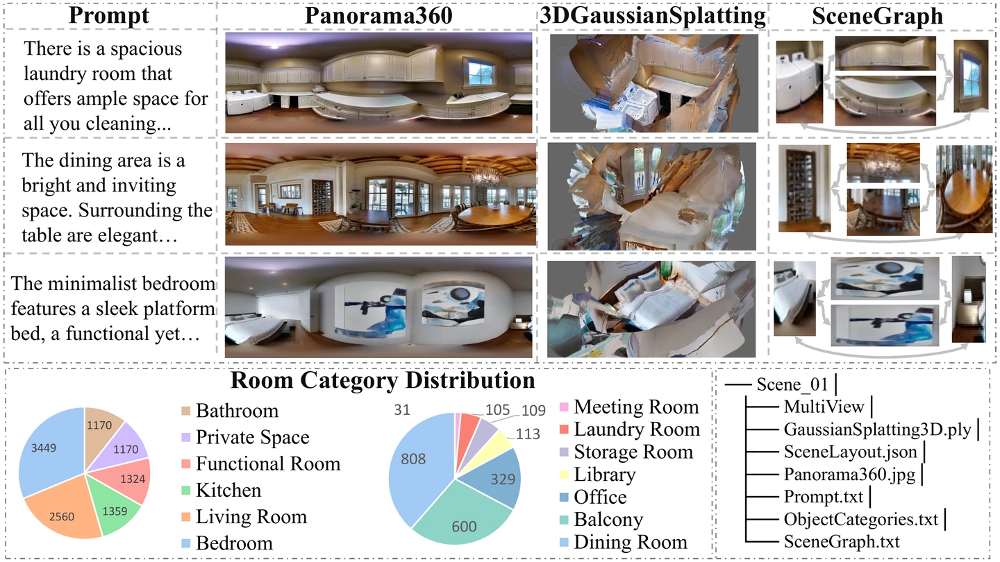
Hosted on Baidu Netdisk Access code: zwhq
05 / EXPERIMENTS
Evaluating spatial structure, category plausibility, and alignment with the prompt.
Spatial configuration and geometric feasibility.
Whether objects fit the scene's intended function.
Correlation between prompt and scene-description embeddings.
| Method | PL ↑ | PC ↑ | α ↑ |
|---|---|---|---|
| PanFusion | 0.621 | 0.588 | 0.576 |
| Qwen2.5 | 0.639 | 0.653 | 0.695 |
| Kolors | 0.699 | 0.675 | 0.681 |
| Doubao | 0.534 | 0.697 | 0.697 |
| Text2Light | 0.537 | 0.674 | 0.493 |
| ControlScene Ours | 0.744 | 0.703 | 0.744 |
Values reproduced from the manuscript's model comparison table.
Comparing initial and refined layouts on category and layout metrics.
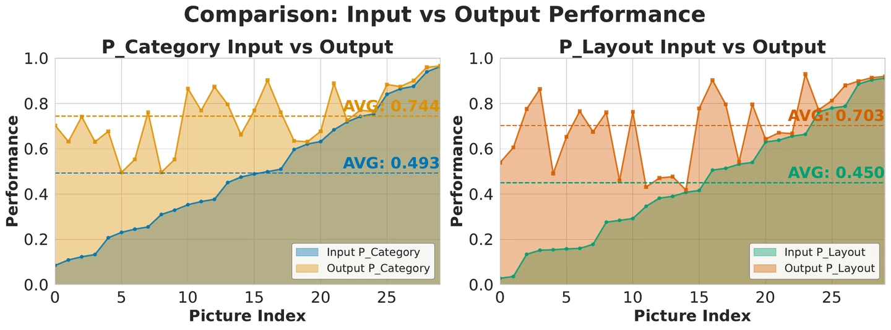
An ablation of the refinement strategy used to guide scene generation.
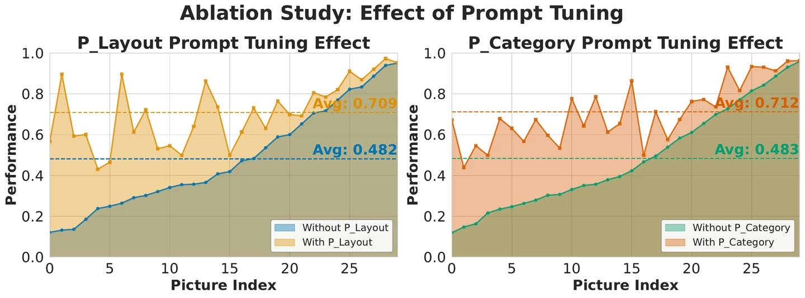
06 / CITATION
If you find our work useful, please consider citing it.
@article{zhang2026controlscene,
title = {ControlScene: Controllable Text-to-3D Scene Generation
via Structured Layout Priors},
author = {Zhang, Ruyi and Zhou, Zhi and Quan, Wenke and Li, Wenrui
and Zuo, Wangmeng and Fan, Xiaopeng},
journal = {CAAI Transactions on Intelligence Technology},
year = {2026},
note = {Accepted for publication}
}Accepted on 31 August 2026. Citation details will be updated when the publisher assigns the DOI, volume, and pages.
{kind=link}
{kind=link}
{kind=link}
{kind=link}
{kind=link}
{kind=link}
{kind=link}
{kind=link}
{kind=link}
{kind=link}
{kind=link}
{kind=link}
{kind=link}
{kind=link}
{kind=link}
{kind=link}
{kind=link}
{kind=link}
{kind=link}
{kind=link}